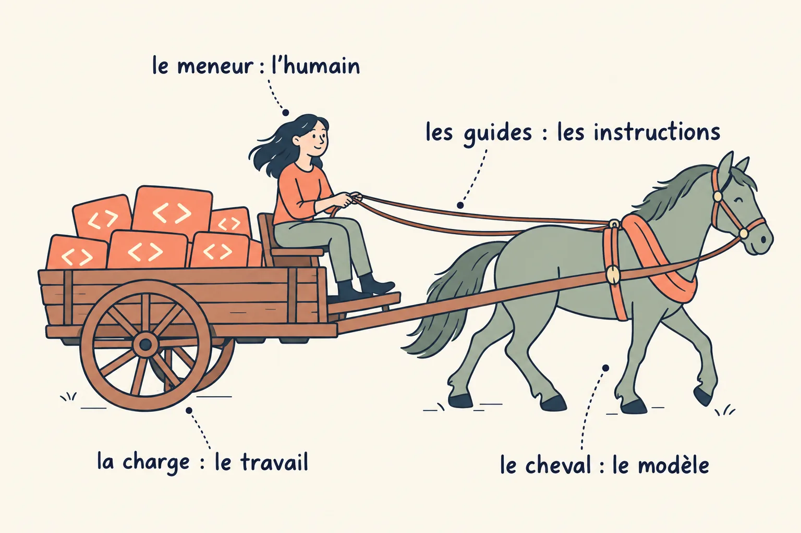
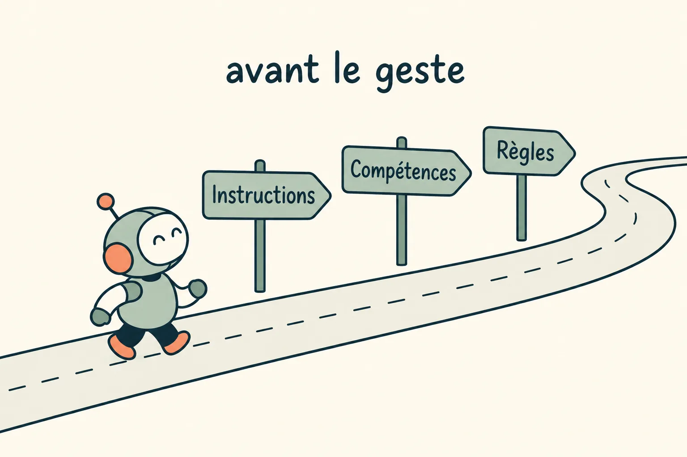
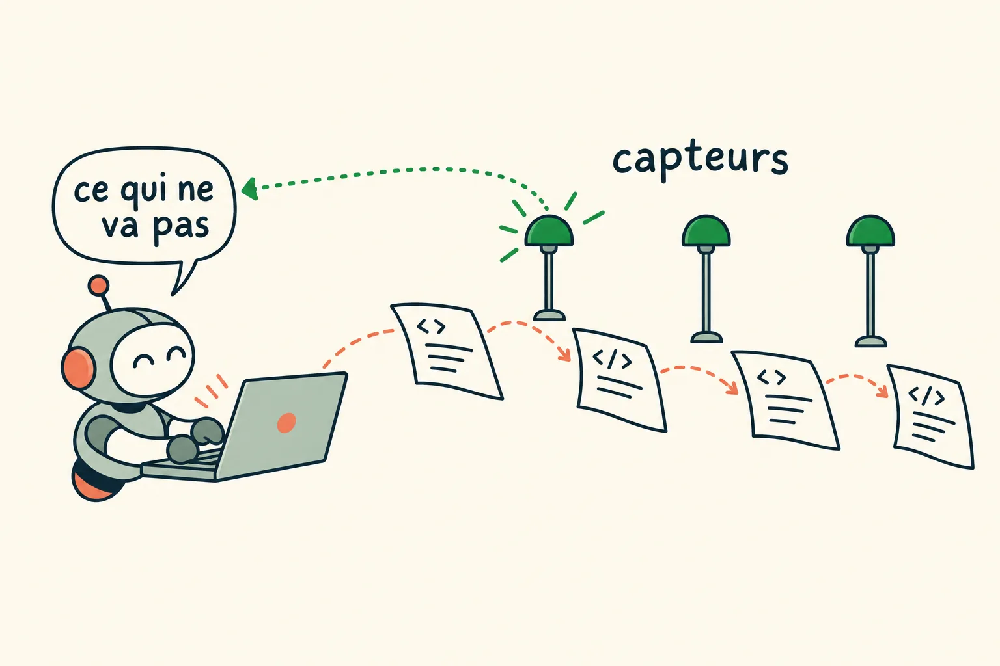
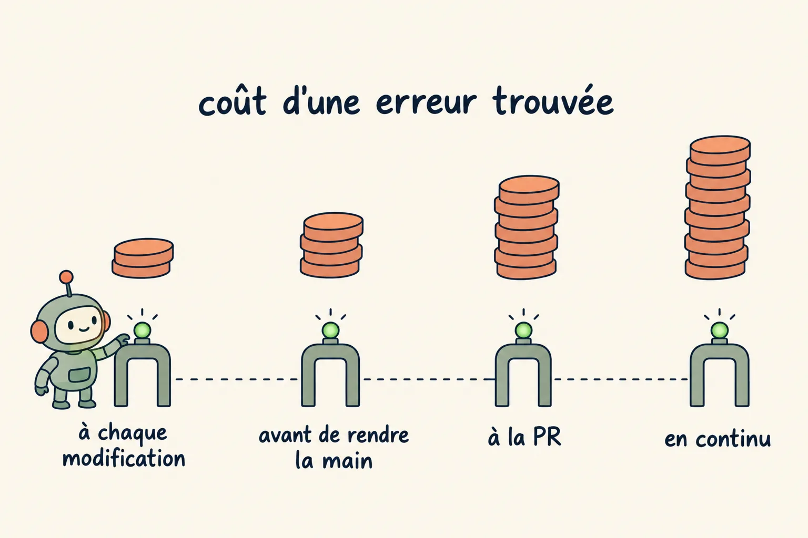
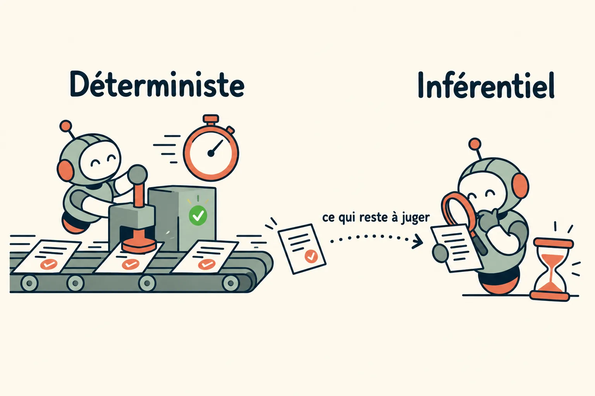
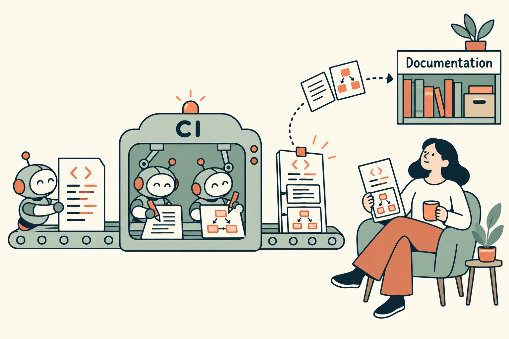
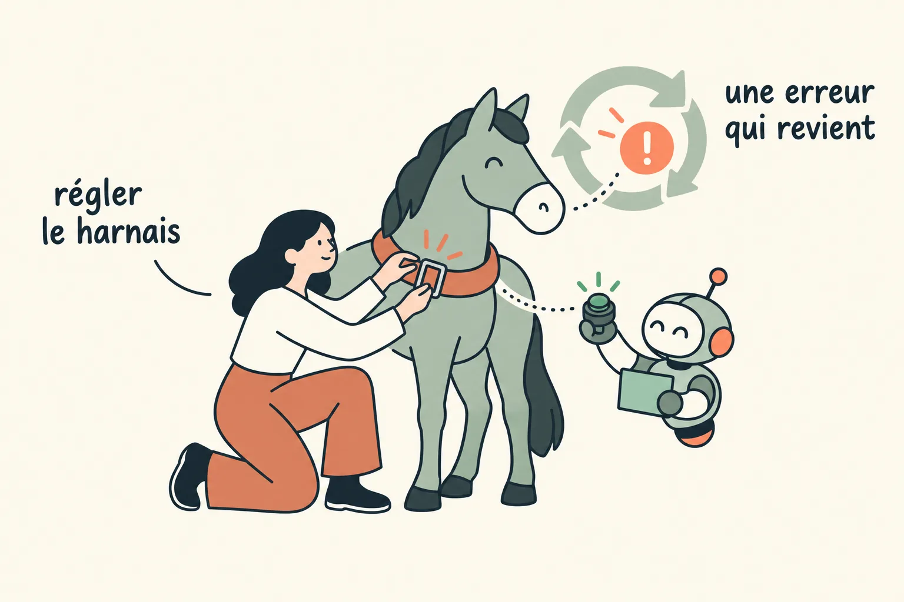

Un harnais qui guide et qui corrige
Un agent, c'est un modèle et son harnais : tout ce qui l'entoure, sauf le modèle lui-même. Le modèle apporte la force, le harnais la dirige. Il guide l'agent avant qu'il agisse, et lui dit le plus tôt possible quand il fait fausse route, pour qu'il se corrige avant qu'un humain ait à relire.
L'image de l'attelage
Un harnais n'ajoute rien à la force du cheval. Il la transmet à la charge, et il porte les signaux du meneur, la personne qui tient les guides, les longues rênes de l'attelage, et qui dirige la voiture. Le mot a pris le même sens pour les agents : Birgitta Böckeler, chez Thoughtworks, résume « agent = modèle + harnais », le harnais désignant tout ce qui n'est pas le modèle : instructions, procédures, outils, vérifications.
L'image tient en 3 correspondances. Le cheval, c'est le modèle : la force, qu'on ne fabrique pas. Les guides, ce sont les instructions données avant le geste. Le meneur, c'est l'humain, qui règle le harnais au lieu de tirer lui-même la charge. Böckeler en reconnaît elle-même les limites : on lui a fait remarquer qu'on ne met pas un harnais à l'intérieur d'un chien. On s'en sert donc là où elle aide, et pas au-delà.

Guider, puis corriger, au plus tôt
Böckeler distingue 2 familles de contrôles, 2 façons de les exécuter et un principe pour les placer. On les a suivis en 6 étapes.
1. Les guides, avant que l'agent agisse
Les guides anticipent. Ils augmentent la chance que l'agent réussisse du premier coup : les instructions de projet, les compétences (module 3), les règles chargées quand on touche certains fichiers. Ils parlent avant le geste, comme le meneur qui prépare le virage.
Seuls, ils ne suffisent pas. Un agent qui n'a que des guides applique des règles sans jamais savoir si elles ont marché.

2. Les capteurs, après chaque geste
Les capteurs observent ce que l'agent vient de faire et lui renvoient un signal : un test qui échoue, une erreur de typage, un refus. C'est là que l'image du cheval s'arrête. Mitchell Hashimoto, le créateur de Terraform, le dit simplement dans le récit de son adoption des agents : le moyen le plus sûr d'obtenir le bon résultat du premier coup est de donner à l'agent des outils rapides et fiables qui lui disent automatiquement quand il se trompe.
Un capteur sert d'autant mieux que son message est écrit pour l'agent : il dit ce qui ne va pas, et ce qui serait accepté. L'agent se corrige alors seul, avant qu'un humain ait à relire. Sans capteur, il répète les mêmes erreurs. Anthropic l'a observé sur ses agents de longue durée : sans consigne explicite, le modèle déclarait une fonctionnalité terminée après des tests unitaires, sans voir qu'elle ne marchait pas de bout en bout. Avec un outil pour la tester dans un navigateur, comme un utilisateur, il trouvait et corrigeait des bugs invisibles dans le code.

Après chaque modification de fichier, un hook lance le contrôle de types du périmètre : pyright pour la data platform, tsc pour l'app. L'agent lit l'erreur dans la même session, sans attendre la CI. Quand le hook guard-bash refuse une commande, son message dit quelle forme serait acceptée.
3. Au plus tôt
Plus un problème est trouvé tard, plus il coûte : un agent qui a construit 3 étapes sur une erreur de typage doit défaire les 3. On place donc chaque capteur aussi tôt que son coût le permet. Böckeler appelle cela garder la qualité à gauche, du côté du début du chemin vers la production.
- À chaque modification, ce qui tourne en quelques secondes : contrôle de types, tests ciblés, linters.
- Avant de rendre la main, la suite de tests du périmètre, un smoke test sur un environnement jetable, et la vérification que l'objectif est atteint (module 2).
- À la PR, ce qui coûte plus cher ou demande la vue d'ensemble : la CI complète et la revue par un modèle.
- En continu, ce qui dérive lentement en dehors de tout changement, comme les dépendances, les coûts ou la sécurité, repassé à cadence fixe par des routines.

Les skills validate de chaque périmètre lancent tests et contrôles avant d'ouvrir la PR ; côté data platform, smoke-test rejoue un workflow sur un environnement du pool. Le hook Stop qui juge la ligne Goal: renvoie au travail une session qui s'arrête avant l'objectif.
4. Le déterministe d'abord, le jugement ensuite
Guides et capteurs s'exécutent de 2 façons. Les contrôles déterministes, tests, contrôle de types, analyse de structure, tournent en quelques secondes et donnent toujours la même réponse : ils sont assez bon marché pour tourner à chaque modification. Les contrôles inférentiels confient le jugement à un modèle, comme une revue de code : plus lents, plus chers, moins prévisibles, mais seuls capables de dire si un changement a du sens. On met le déterministe partout où il sait répondre, et on garde le jugement pour ce qu'aucun test ne tranche.

Sur chaque PR, un modèle relit le diff, après les tests et les contrôles de types qui tournent avant lui.
5. La CI documente après coup
La CI est elle aussi un harnais, et elle peut faire plus que vérifier. Un agent peut y rétrodocumenter le code : dire ce que change chaque commit, décrire l'architecture que touche la PR, générer les schémas qui la montrent. L'humain comprend le changement avant d'ouvrir le diff, et la PR devient facile à relire. Cette documentation, écrite à partir du code réel au moment où il change, nourrit aussi les outils de documentation de l'équipe, au lieu de vieillir à côté du code.

Sur chaque PR, 3 agents tournent dans la CI, chacun dans sa propre session. Le premier relit le diff. Le deuxième écrit le bloc d'architecture de la description, à partir d'un paquet de contexte assemblé sans appel à un modèle. Le troisième, quand la PR touche la data platform, dessine son architecture en D2 avec le skill archi-diagram, et le schéma s'affiche dans la description. Le schéma est un bonus : s'il échoue, la revue ne passe pas au rouge.
6. Le meneur règle le harnais
Le travail de l'humain change. Il ne corrige plus l'agent à la main, il règle le harnais : quand un problème revient, il ajoute un guide qui le rend moins probable, ou un capteur qui le voit tout de suite. C'est la rétroaction décrite avec les compétences (module 3), appliquée au harnais entier. Hashimoto en a fait sa règle : chaque fois qu'un agent se trompe, prendre le temps de construire de quoi il ne refera jamais cette erreur. L'agent peut d'ailleurs écrire lui-même une partie de ces contrôles, qu'il s'agisse d'un test de structure, d'une règle de linter ou d'un script de vérification.

Le hook guard-bash s'est réglé ainsi. Un déploiement a un jour visé la prod avec l'environnement passé en premier argument ; depuis, le hook lit l'environnement comme le script le lit et refuse tout autre environnement que le dev. Une vingtaine de formes de cette commande ont rejoint sa suite de tests, test_guard_bash.py. Un autre hook note chaque demande d'autorisation dans un journal de frictions, relu pour décider quelles commandes autoriser d'office.
Les pièces du harnais
| Brique | Ce qu'elle porte | Règle d'écriture |
|---|---|---|
| Instructions de projet | Ce qui ne se voit pas dans le code et qui a déjà mordu. | Court, par zone du code. Pas de redite de ce que le code ou l'historique disent déjà. |
| Procédures (skills) | Un chemin critique écrit une fois : démarrer une tâche, committer, piloter une PR jusqu'au merge, diagnostiquer. Le déploiement revient à la CD. | Une description qui dit quand s'en servir. Les sessions autonomes sont obligées de passer par elle. |
| Règles ciblées | Des contrats chargés seulement quand on touche certains chemins. | Liées à un motif de fichiers, pour ne pas polluer le contexte. |
| Permissions et hooks | Ce que l'agent peut faire sans demander, et les garde-fous (module 5). | Autonomes par périmètre, validés en CI. |
| Connecteurs | Les outils externes disponibles dans le périmètre. | Restreints au périmètre : pas d'accès à la base analytique dans une session applicative. |
Une quarantaine de skills Claude Code dans le monorepo : une douzaine partagés à la racine (commit, cycle de vie d'une PR, démarrage d'une tâche, rédaction de tickets, plan relu en ligne, création de skills), une quinzaine propres à l'app (événements de domaine, commandes, routes, glossaire métier, tâches de fond), une dizaine propres à la data platform (déployer sur un environnement de dev, lancer un workflow, smoke test, surveiller, diagnostiquer). Plus des skills d'écriture hors dépôt : retirer les tics d'écriture IA, formater pour Slack, vulgariser un incident.
Ce qui marche
- Un skill par chemin critique, et un seul chemin. Une PR qui peut s'ouvrir de 3 façons donnera 3 comportements.
- Le même harnais partout. La machine jetable d'un agent charge exactement la même configuration que le poste du développeur : une amélioration profite aux deux.
- Mesurer qu'un skill aide. On note et on compare plusieurs exécutions avec et sans le skill, car une modification qui « a l'air mieux » ne l'est pas toujours.
- Un skill qu'il faut penser à appeler finit oublié. Un hook qui lit la demande peut le charger de lui-même, par exemple un skill de style dès qu'on rédige pour la messagerie. Une détection par motifs laisse quand même passer certaines formulations.
- Auditer les instructions quand le modèle change. Une consigne écrite pour le modèle précédent vieillit en silence : une commande, un chemin ou une cible cités qui n'existent plus, une façon de forcer un appel d'outil que le nouveau modèle refuse. Chaque affirmation de l'audit se vérifie contre le code avant d'être appliquée.
Un contexte propre
Plus le contexte d'une session grossit, plus l'agent se disperse : il oublie une consigne du début, mélange des pistes déjà abandonnées, et chaque tour coûte plus cher. Disposer d'une grande fenêtre de contexte ne justifie pas de la remplir.
- Compacter bien avant la limite, et parfois repartir d'une session neuve plutôt que de compacter.
- Déléguer les lectures larges à des agents qui ne rendent que leur conclusion.
- Voir venir la limite : le remplissage du contexte et les quotas d'usage affichés en permanence, pour ne pas être coupé au milieu d'une tâche.
- Une PR suivante, une session suivante. La session qui termine la première écrit la tâche de la suivante pendant qu'elle a tout le contexte. Cette tâche démarre dans son propre espace, sur une branche empilée sur la précédente pour éviter les conflits.
Opus avec la fenêtre d'un million de tokens, et l'autocompaction réglée vers 400 000 (autoCompactWindow). Une statusline d'une cinquantaine de lignes de shell affiche modèle, dépôt, branche, contexte et quotas sur 5 h et 7 jours. Pour la PR suivante, odette-start-task lancé depuis la session de la première.
Faire circuler les changements
Versionner le harnais ne sert pas à grand-chose si personne ne sait qu'il a bougé.
- Des notes de version hebdomadaires des tâches d'outillage livrées. en cours
- Chaque développeur relit le diff de sa configuration locale de la semaine et propose ce qui mérite d'être partagé. en cours
- Un canal réservé aux astuces, une par message, discutée en fil. Celles que l'équipe adopte migrent dans le dépôt. en place
À reprendre
- Donnez à l'agent des guides avant le geste et des capteurs après, jamais l'un sans l'autre.
- Écrivez les messages des capteurs pour l'agent : ce qui ne va pas, et ce qui serait accepté.
- Placez chaque contrôle au plus tôt : le rapide à chaque modification, le cher à la PR.
- Le déterministe partout où il suffit, un modèle pour juger le reste.
- Faites documenter chaque PR par la CI, schémas compris, pour la relecture humaine et pour la documentation de l'équipe.
- Quand une erreur revient, réglez le harnais plutôt que de la corriger à la main.
- Mettez la configuration de l'agent dans le dépôt, relue en PR, la même pour l'humain et pour l'agent.
- Compactez tôt, ouvrez une session neuve pour la tâche suivante, et annoncez les changements de harnais comme des changements de produit.